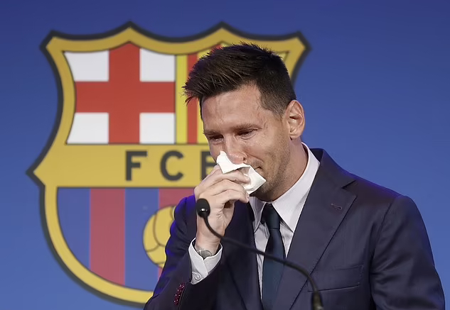

Đội bóng cũ của Lionel Messi thuê luật sư khiếu nại về những vấn đề tài chính của
PSG lên Ủy ban châu Âu
"Thay mặt cho các đối tác của Barca, chúng tôi chuẩn bị khiếu nại lên Ủy ban châu
Âu, yêu cầu tạm đình chỉ việc PSG ký hợp đồng với Lionel Messi", luật sư Juan
Branco xác nhận trên Twitter hôm 8/8. "Tỷ lệ chấp hành luật công bằng tài chính
của PSG kém hơn Barca. Trong mùa 2019-2020, tỷ lệ lương trên thu nhập của
PSG là 99%, trong khi của Barca là 54%".

Khó khăn tài chính là lý do khiến Barca phải đi đến quyết định không gia hạn hợp
đồng với Messi. Theo Chủ tịch Joan Laporta, ngay cả khi Messi giảm 50% lương
như thỏa thuận, tỷ lệ lương trên thu nhập của Barca ở mức 110% và vượt giới hạn
cho phép ở La Liga.
Trong trường hợp không gia hạn với tiền đạo người Argentina, tỷ lệ này vẫn ở mức
rất cao: 95%, do doanh thu giảm sâu vì Covid-19 và thành tích thi đấu sa sút vài
năm qua. Barca hiện còn nhiều cầu thủ hưởng lương trên 300.000 USD mỗi tuần
như Antoine Griezmann, Philippe Coutinho...
Sau khi Barca bất đắc dĩ giải phóng Messi, PSG đã phản ứng sớm nhất. Đội bóng
Pháp đề nghị hợp đồng hai năm với mức lương 35 triệu euro mỗi năm(khoảng 41
triệu USD). Theo nguồn tin thân cận với Chủ tịch PSG Nasser Al-Khelaifi, cuộc đàm
phán với Messi đã hoàn tất. PSG cũng đã thuê tháp Eiffel để chuẩn bị ra mắt tiền
đạo người Argentina.
Trong mùa 2020-2021, chi phí lương của PSG là 280 triệu USD. Năm nay, khoản
này dự kiến tăng thêm 60 triệu USD khi chiêu mộ Sergio Ramos, Wijnaldum, Achraf
Hakimi, Gianluigi Donnarumma, và sẽ tăng tiếp nếu ký với Messi. Tuy nhiên, PSG
khác Barca ở chỗ: họ không thiếu tiền.
PSG hiện thuộc sở hữu của Qatar Sports Investments (QSI - Quỹ đầu tư thể thao
Qatar). Quỹ này mua lại đội bóng Pháp từ năm 2011, và họ thực chất không chỉ là
một tổ chức đơn lẻ mà đại diện cho đất nước Qatar. Người đứng đầu QSI - ông
Nasser Al-Khelaifi - cũng là Chủ tịch của PSG.
UEFA từng sờ gáy PSG nhiều lần, nhưng việc Luật Công bằng Tài chính FFP được
nới lỏng từ hè 2020 dường như là tín hiệu đèn xanh cho họ tiếp tục vung tiền.
UEFA quyết định không áp dụng điều luật cấm các CLB lỗ quá 35 triệu USD trong
ba năm liên tiếp, đánh giá hàng năm, như một "biện pháp khẩn cấp" hỗ trợ các đội
trong đại dịch. Điều này có nghĩa UEFA không đánh giá tài chính các đội bóng sau
năm 2020 mà được dời sang năm 2021, tức gộp hai kỳ đánh giá lại thành một. Nếu
lỗ quá 35 triệu USD, các đội chỉ cần chứng minh nó là di chấn do Covid-19.
Chiều 8/8, Messi đã tổ chức họp báo chia tay Barca. Tiền đạo người Argentina
khẳng định hoàn toàn bất ngờ với thông báo không gia hạn từ CLB và không hề
muốn ra đi. Messi cũng xác nhận PSG là "một điểm đến tiềm năng".
Pique: ‘Barca mất ma thuật tấn công khi chia tay Messi'
Koeman: ‘Barca vẫn hào hứng dù thiếu Messi’
Những lời cuối của Messi ở Barca
| Tên clb | Tỷ lệ thành công |
|---|---|
| Trang | 200% |